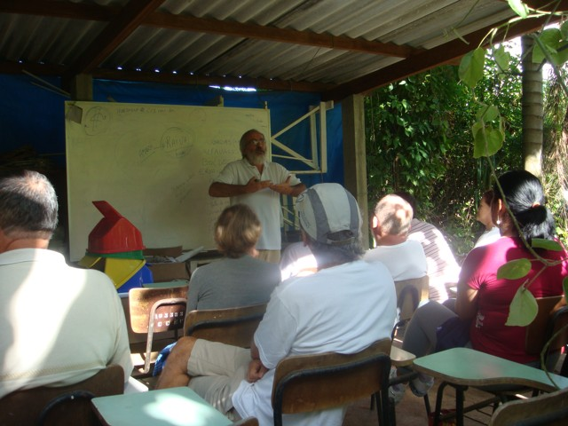

<!DOCTYPE html><html lang="pt-br"><head><meta charset="utf-8"><title>Horto de plantas medicinais da UFSC</title><meta name="viewport" content="width=device-width, initial-scale=1"><link rel="stylesheet" type="text/css" href="_assets/css/main.css"></head><body></body></html><div class="header_ufsc"></div><div class="header"><ul class="menu"><li><a id="header-logo" href="index.html"></a></li><li><a href="index.html">Início</a></li><li><a href="sobre.html">Sobre o Horto</a></li><li><a href="resultados.html">Plantas</a></li><li><a href="index.html#contato">Contato</a></li><li><a href="adm_login.html">Login</a></li><button class="menuUsoSeguro">Uso seguro de plantas</button></ul></div><div class="container" id="artigo"><article><div class="capa"></div><button class="btn-pdf btn-aside">Baixar PDF<svg class="feather"><use xlink:href="_assets/ico/feather-sprite.svg#download"></use></svg></button><h1>Sobre o horto</h1>
<p><em class="data">Última atualização em 31/02/2019</em></p>
<p>As plantas medicinais fazem parte da história do ser humano e ainda hoje do cotidiano de grande parte da população, em torno de 80% da população as utilizam ou como opção única de tratamento ou em associação com medicamentos de síntese ,  estudos mostram a eficácia de algumas plantas medicinais - alho , erva balieira -  ;   espécies que podem causar agravos a saúde - confrei , cipó milomens ; interações medicamentosas - erva de são joão e indinavir ; plantas que deve ser evitada em grávidas buchinha do norte , cipó cilomens ; o dia a dia nos faz ver a eficácia de uma planta - manjericão - em uma criança com estomatite . Estes fatos poderiam nos fazer pensar ser lógico o ensino de plantas  medicinais e seu uso seguro e adequado aos graduandos da área da saúde e afins ; Analisando o currículo do sistema de formação de recursos humanos para a área de saúde ( e das ligadas ao tema , Agronomia , Biologia / Botânica ) notamos ser  raro incluir este saber/conhecimento na grade curricular.</p>
<p>Estes fatos -  população que utiliza um método terapêutico X profissional de saúde que desconhece X sistema formador quase ausente - nos remetem a necessidade de informar / formar aos profissionais de saúde e aos graduandos de nossas universidades no uso correto e adequado das plantas medicinais.</p>
<p>Como meio de atingir este objetivo temos várias &quot; frentes de ação &quot;, uma  é incluir na grade curricular de todos os cursos que se relacionam com o assunto a disciplina Plantas Medicinais  e Comestíveis, outra  é proporcionar aos trabalhadores da área de saúde , Agronomia e Biologia / Botânica cursos de formação / informação em plantas medicinais.</p>
<div class=foto>

<em class="legenda">Uma das aulas no espaço do Horto Medicinal</em>
</div>
<p>A inclusão do estudo de Plantas Medicinais no curso de Medicina inicia em 1997  ;  com a mudança no internato de medicina de 2 para 3 semestres, permitiu que, na 10ª fase os alunos tivessem informações sobre 03 (tres) racionalidades das chamadas  Práticas Integrativas e Complementares - 1ª) Acupuntura e  Medicina Tradicional Chinesa (MTC), 2ª) Homeopatia e 3ª) Plantas Medicinais - cada uma com 16 horas/semestre dentro da carga horária do Departamento de Saúde Pública; com a reforma curricular em 2003 os alunos perdem esta vivência e hoje na UFSC existem disciplinas optativas de Acupuntura, MTC, PNPIC e duas disciplinas optativas de plantas medicinais (SPB7010 e NFR 5167) que fazem a prática no Horto Didático de Plantas Medicinais do HU/CCS/UFSC.</p>
<p>Parte do aprendizado em plantas medicinais é feito através da interação com os espécimes conhecidos como medicinais e/ou comestíveis, desta maneira podemos apreciar sua forma, sentir  o seu odor, o  sabor, a textura de suas folhas, conhecer o nome dado pelos botânicos e pela população; reconhecer plantas diferentes com o mesmo nome popular ( boldo  Peumus boldus, Plectranthus spp, Vernonia condensata ), planta com forma, cheiro sabor, indicação e nomes  populares diferentes (Lippia alba - “melissa”, salva, erva-cidreira).</p>
<p>Para isto,  tornou-se necessário um local para plantio dos espécimes utilizados pela população e que seriam mostrados aos alunos;  o primeiro local das aulas práticas foi onde é hoje o Parque Ecológico do Córrego Grande, no período de  1997 a 1998, a partir de 1999 foi permitido o uso de uma área que já era cercada, perto do HU-UFSC,  com aproximadamente 800m²,  como local de plantio das diversas espécies utilizadas pela população  e assim foi criado o Horto Didático do HU/CCS/UFSC, que permite aos alunos  o contato com plantas medicinais  utilizadas pela população e mesmo plantas exóticas que tem ação medicinal mas não tradição de uso em nosso meio, como exemplos:  Ruscus aculeatus e Cnidoscolus chayamansa.</p>
<p>Além das aulas práticas das disciplinas optativas de plantas medicinais,  no local acontecem outras atividades , uma delas são os encontros as quintas-feira pela manhã,  onde pessoas interessadas vão para conversar sobre plantas, cuidar de canteiros, preparar mudas de ervas,  e interagir com o horto e suas plantas; algumas vezes trazem espécimes para esclarecimentos ( um senhor trouxe uma planta do gênero Mahonia com folhas de margem com espinhos para saber se era espinheira santa ) e assim contribuem para aumentar o acervo ; somos visitados por escolas ;  pessoas que fazem grupo de atenção a saúde em UBS da rede municipal ; estudantes de outras unidades de ensino.</p>
<p>Esta página é um levantamento bibliográfico e relatos de  uso de algumas espécies que observamos no dia a dia, tanto de plantas seguras como de plantas que podem causar agravos a saúde .</p>
<p>Agradecemos a todos que colaboraram na elaboração desta página.</p>
<hr>
<h2>Referências</h2>
<p>AMEIRA, O.A. et al. Estabelecimento de cultura de células em suspensão e identificação de flavonóides em _Cordia verbenace_a DC. Revista Brasileira de Plantas Medicinais, Botucatu, v. 11, n. 1, p. 7-11, 2009.</p>
<p>FERRAZ, E. O. <em>Cordia verbenacea</em>: um caso de sucesso na fitoterapia brasileira. Lavras, MG: UFLA, 2010.</p>
<p>LINS,A.P.; ALVARENGA, M. A. Flavonóides de <em>Cordia verbenacea</em>. Supl. Ciência e Cultura, São Paulo, v. 32, p. 457, 1980.</p>
</article></div><div class="footer"><div class="grid-container"><div class="logos"><div id="logo-horto-footer" href="index.html"></div><div id="logo-ufsc-footer"></div><div id="logo-css-footer"></div></div><div class="mapa"><h3>Mapa do site</h3><div class="listas"><ul class="paginas"><li><a href="index.html">Página inicial</a></li><li><a href="uso-seguro.html">Uso seguro de plantas</a></li><li><a href="sobre.html">Sobre o Horto</a></li><li><a href="index.html#contato">Contato</a></li><li><a href="admin/login.html">Login</a></li></ul><ul class="etiquetas"><li><a href="resultados.html">Lista de plantas</a></li><li><a href="etiquetas.html">Lista de sintomas</a></li><li><a href="etiquetas.html">Lista de usos</a></li></ul></div></div><ul class="enderecos"><li><a href="#">Rua Endereço Oficial, 245. Trindade - Florianópolis</a></li><li><a href="#">(48) 3232-9595</a></li><li><a href="mailto:hortodohu@contato.ufsc.br">hortodohu@contato.ufsc.br</a></li></ul></div></div>